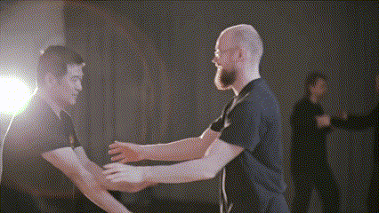
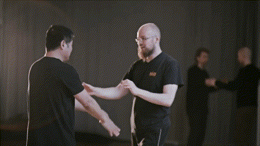
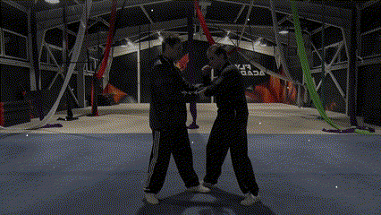
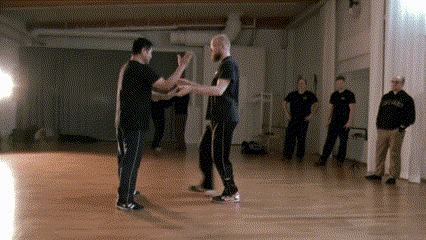

Una metáfora ilustrativa sería la de un velero: su tripulación nunca intentará navegar directamente contra el viento. Mantendrá las velas izadas hasta que el viento cambie de dirección y sople hacia donde desean dirigirse. Solo entonces aprovecharán su fuerza. Este sería el Gong Fu de Gong: actuar en consonancia con las condiciones naturales, sin oponerse a ellas.
En contraste, el Gong Fu de Fa podría representarse con una tripulación que, aun con el viento en contra, rema con fuerza intentando avanzar. No solo no aprovecha el curso natural, sino que lucha activamente contra él.
A diferencia de muchas artes marciales centradas en desarrollar potencia física y habilidad en técnicas específicas, el Tai Ji Quan se enfoca en el desarrollo del Jin (劲): una capacidad global de movimiento, percepción y control corporal.
En el Gong Fu de Gong, el trabajo de las formas busca crear un vínculo entre un patrón de movimiento y una intención. Así, durante el Tui Shou, si la intención es redirigir o disolver una fuerza entrante, o colapsar el centro del compañero, el cuerpo generará de manera natural e instintiva el movimiento adecuado, sin necesidad de seleccionar conscientemente una técnica concreta.
En el siguiente ejemplo puede observarse un trabajo de aplicaciones derivadas del Gong Fu de Gong. El maestro responde a la situación bloqueando al compañero sin recurrir a una técnica específica, sino a partir de un patrón de movimiento generalizado que emerge del desarrollo del Jin.

Aquí podemos comparar la misma aplicación desde la perspectiva del Gong Fu de Gong y del Gong Fu de Fa. En los vídeos situados a la izquierda, el maestro disuelve y se adapta a la ofensiva incontrolada del rival, reaccionando de forma natural y espontánea. En cambio, en los vídeos de la derecha, el maestro ejecuta directamente una técnica contundente con la intención de sorprender, lo que constituye una acción deliberada y no una reacción. En este último caso se rompe el principio de Zìrán (naturalidad).



En la actualidad resulta cada vez más frecuente que muchos practicantes de Tai Ji Quan se sientan atraídos por el Gong Fu de Fa en la práctica del Tui Shou, dejando de lado el desarrollo del Jin. El auge del Tui Shou orientado a la competición ha sido tan grande que cada vez es más difícil encontrar maestros que conserven y transmitan el Gong Fu de Gong. El entorno deportivo posee hoy un enorme impacto mediático y una capacidad de atracción muy fuerte, especialmente entre los practicantes más jóvenes. Esto empuja a muchos maestros a orientar su enseñanza hacia resultados rápidos y visibles —buenos competidores—, poniendo en riesgo la continuidad de la tradición y del trabajo profundo que caracteriza al Gong Fu de Gong.
A este fenómeno se suma otro factor decisivo: el intrusismo que ha afectado al Tai Ji Quan desde su popularización en Occidente. Al convertirse en una disciplina rentable, proliferaron instructores que no contaron con una formación sólida ni con la supervisión prolongada de un maestro cualificado. Internet está repleto de “gurús” que, en muchos casos, han construido su reputación sobre bases técnicas muy débiles, generando confusión, ambigüedad y expectativas irreales tanto en ellos mismos como en sus alumnos.
Esta situación ha contribuido a que la competición —con sus resultados palpables y verificables— se perciba como una alternativa más fiable y atractiva. No es extraño que muchos practicantes jóvenes encuentren en el Gong Fu de Fa una vía clara para medir su progreso, especialmente cuando algunos referentes del ámbito tradicional, pese a su fama, han demostrado carecer de un nivel real en sus habilidades. Todo ello ha reforzado la tendencia actual: un desplazamiento progresivo hacia el Gong Fu de Fa y un debilitamiento del espacio dedicado al Gong Fu de Gong.